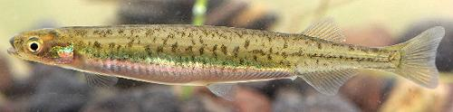

Here we will describe only the Common Galaxias (Galaxias maculatus) as it dominates the catch. Of the 117 known species of Galaxias, many are endangered, critically endangered, inconvenient to catch in quantity, or don't live in the region. Photo to the left is of Juvenile fish, as harvested for culinary use in New Zealand. Photo by Stewart Nimmo distributed under license Creative Commons Attribution-ShareAlike v4.0 International.
This fish is found around Australia, Tasmania, New Zealand, the coasts of South America from Chile around to southern Argentina, and the Falkland Islands. This species is IUCN Red List LC (Least Concern). It can grow to 7.48 inches, but is normally below 4 inches. As caught for culinary uses it is in a juvenile state and around 2 inches. These fish live in regions were rivers empty into the sea, and migrate into the rivers to spawn.
In Australia and Tasmania, commercial fishing for Whitebait is forbidden,
and non-commercial is highly restricted by catch and season. There is some
highly controlled commercial fishing around New Zealand. There the season
is carefully timed to catch only Common Galaxias and not the other Galaxias
which are more threatened. Even so, catch is declining due to destruction
of habitat. It is illegal to catch adult fish except for native peoples,
and even they are under restrictions.

An Adult Common Galaxias photographed in Chile.
Photo by Johannes Schoeffmann distributed under license
Creative Commons
Attribution-ShareAlike v3.0 unported.
More on Varieties of Fish (very
large page).
The Common Galaxia (and others when caught) are sold freshly caught when
in season. A few are frozen for later, if they aren't all sold out. The
favorite way to serve these in New Zealand is as "Whitebait Fritters". It
is a kind of omelet, but properly only egg whites are used to avoid masking
the taste of the very expensive fish. Retail cost in 2013 was around
NZ $130 / kilogram (US $100 / pound), and there's a 25% tax on top of that.
Photo by Inanga contributed
to the Public Domain.